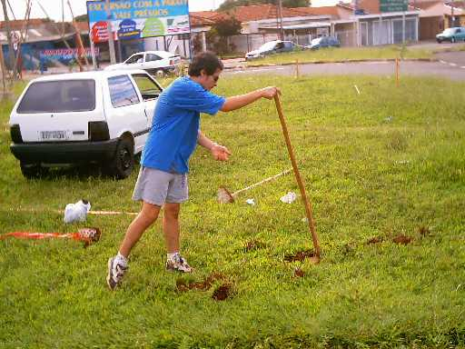
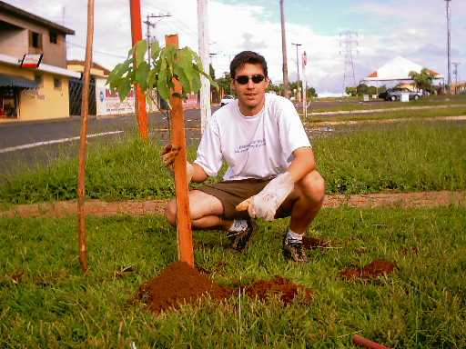
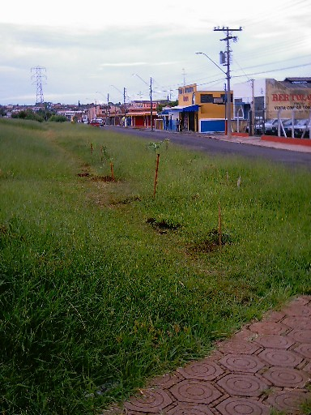

Feliz 2004!!!
Começamos o
ano com pique total para os plantios!!!
Plantamos 14 mudas na rotatória que liga
as avenidas Henrique Gregori e Grécia, e mais
7 mudas no Quarteirão F da avenida Henrique Gregori.
Dentre as 21
mudas, foram plantadas:
- Sapucaia
- Lapacho
- Sabão de Macaco
- Aldrago
- Ipê Roxo
- Ipê Amarelo
- Ipê Branco
- Ipê Rosa
- Erytrina
- Chapéu de Napoleão
|
Veja
as fotos:
 |
Alexandre
abre o buraco para as primeiras mudas.
O chão mole por causa das chuvas facilita o trabalho. |
 |
Danilo
posa ao lado de um dos Ipês Roxos plantados na rotatória.
Denominamos a "Rotatória dos Ipês" por causa da quantidade
de árvores desta espécie plantadas no local. |
 |
Nesta foto
vemos 6 das 7 mudas plantadas
no Quarteirão F da Avenida Henrique Gregori. |
Estes dois plantios foram
importantíssimos para nós.
Com eles, inserimos árvores em locais onde não havia
nenhum tipo de vegetação de médio/grande porte.
Conseguimos
uma vitória no Quarteirão F pois
beneficiamos um quarteirão totalmente vazio com lindas árvores.
O nosso
exemplo foi seguido por outros moradores
que plantaram mais árvores no local!
Este é o
intuito do Projeto Plante a Vida!
Dar o exemplo para que as pessoas percebam a importância e a necessidade
de se recuperar a flora local, arborizando as vias públicas.
Que Deus
abençoe o nosso projeto em 2004
para que possamos continuar plantando muitas árvores!
Junte-se a
nós, plante uma árvore!!!
Veja como, acessando o link "Plante uma Árvore"!
Plante a Vida!
:)
|